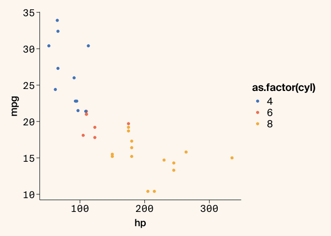
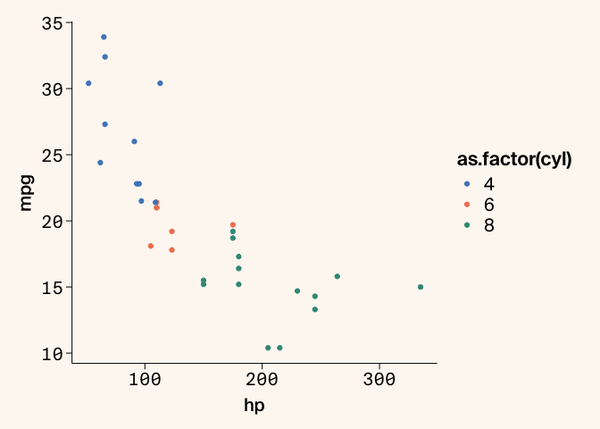
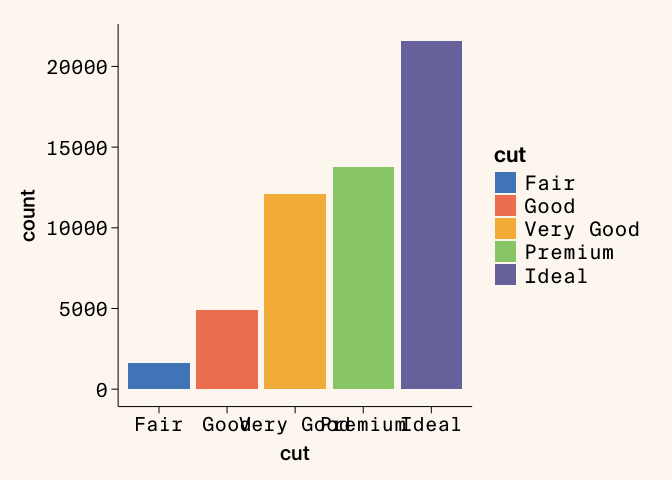
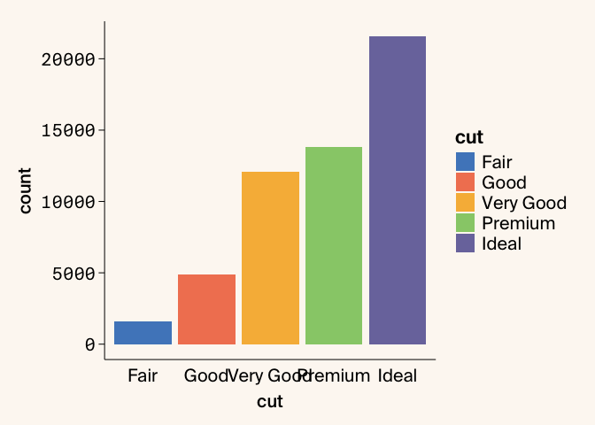
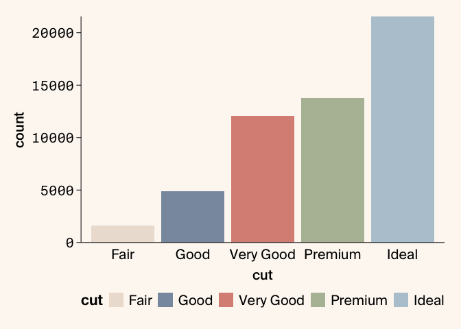
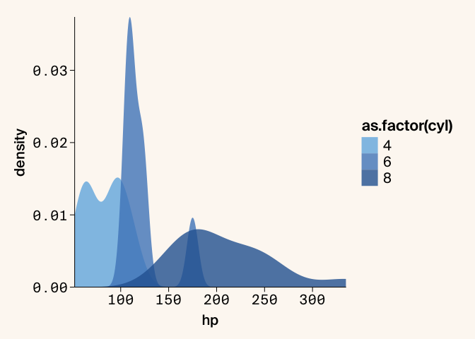
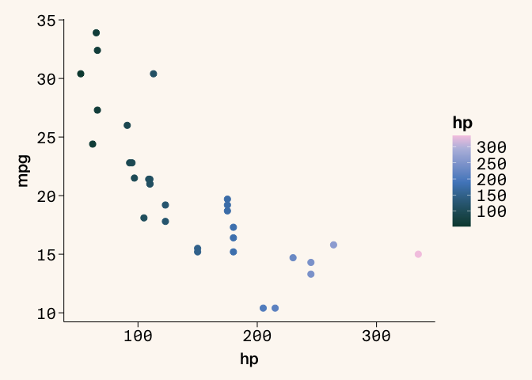
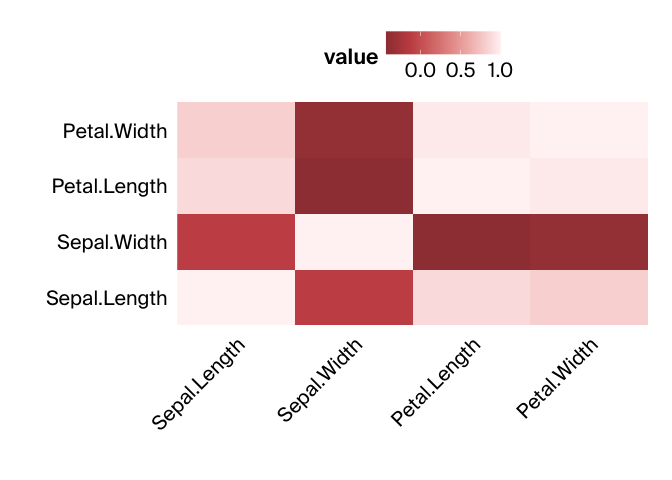

Using arcadiathemeR to make figures in R
arcadiathemeR is an R package that provides functions to create
ggplot2-style figures that (mostly) adhere to the Arcadia Science
style guide. This lesson provides a quick introduction to
arcadiathemeR and how to use it to style ggplot2-style plots, which
largely follows the package README
documentation.
We’ll cover the following topics:
- Installing
arcadiathemeR - Using
arcadiathemeRto layer onto aggplot2plot - Accessing and using colors, palettes, and gradients
- Saving plots
Prerequisites and Installation
-
You need
Rinstalled, andarcadiathemeRrequires at least R version >= 4.0 (the package was built and tested with version 4.3.1). InstallRfor Mac OS X here. -
You can use
RStudioor a Jupyter notebook for creating plots. InstallRStudiofor Mac OSx here or Jupyter in a conda environment following these instructions. -
To use the custom fonts you need to download the
TTFformatted font files and place in theUsers/YOURUSERNAME/Library/Fonts/directory. You can also double click on the fonts to install them using FontBook. Check out the Arcadia Science Brand Assets page in Notion to find these. This should only need to be performed once even if the package is updated over time. You must download the TTF formatted files to be compatible witharcadiathemeR. If you want to download both theTTFandOTFformatted files to use botharcadiathemeRand thearcadia-pycolorpython package that’s fine - there will just be duplicate selections for each font in Illustrator. -
Install
arcadiathemeRwith theremotespackage:# install.packages("remotes") remotes::install_github("Arcadia-Science/arcadiathemeR") -
Load the package to use in your scripts with
library(arcadiathemeR). When you first load the package in a new R session it will print a message about whether the custom fonts have been accessed and loaded correctly.
Layering onto an existing ggplot2 plot
There are two main functions you will use to layer onto an existing
ggplot2 plot to create plots adhering to the Arcadia style guide and
access palettes. These are the theme_arcadia and scale functions.
The particular scale function differs on whether you use color or
fill to access colors. Here is how you use these functions without
changing the default arguments:
library(ggplot2)
library(arcadiathemeR)
#> Loading Suisse fonts...
#> All custom fonts 'Suisse Int'l, Suisse Int'l Semi Bold, Suisse Int'l Medium, Suisse Int'l Mono' are successfully loaded.
ggplot(data=mtcars, aes(x=hp, y=mpg, color=as.factor(cyl))) +
geom_point() +
theme_arcadia() +
scale_color_arcadia()

If you want to change the color palette used, you can access this with
the palette_name argument in the scale function:
ggplot(data=mtcars, aes(x=hp, y=mpg, color=as.factor(cyl))) +
geom_point() +
theme_arcadia() +
scale_color_arcadia(palette_name = "primary")

We have specific font specifications for whether the represented data is categorical or numerical. In the next plot where the x-axis is different categories, you can see where the font isn’t specified correctly:
ggplot(data=diamonds, aes(x=cut, fill=cut)) +
geom_bar() +
theme_arcadia() +
scale_fill_arcadia()

To use the correct font type, you can specify what type of data you have
on each axis by using the x_axis_type or y_axis_type arguments in
the theme_arcadia function:
ggplot(data=diamonds, aes(x=cut, fill=cut)) +
geom_bar() +
theme_arcadia(x_axis_type = "categorical") +
scale_fill_arcadia()

In addition to specifying which palette to use in the scale function,
you can also reverse the colors of the scale used with reverse=TRUE.
You can also use other ggplot2 or theme specifications on top of
these functions, such as moving the position of the legend or modifying
the scales to remove whitespace between the axis lines and the bars:
ggplot(data=diamonds, aes(x=cut, fill=cut)) +
geom_bar() +
theme_arcadia(x_axis_type = "categorical") +
scale_fill_arcadia(palette_name = "secondary", reverse = TRUE) +
scale_y_continuous(expand=c(0,0)) + # removes whitespace between axis and bars
theme(legend.position = "bottom")

In addition to reversing the order of the colors used in the palette,
you can select different indices of colors from the palettes within the
scale function with the start and end arguments:
ggplot(mtcars, aes(x = hp, fill = as.factor(cyl))) +
geom_density(alpha = 0.8, linewidth = 0) + # remove border line from filled-in density plots
theme_arcadia() +
scale_fill_arcadia(palette_name = "blue_shades", start=2, end=5) +
scale_y_continuous(expand=c(0,0)) +
scale_x_continuous(expand=c(0,0)) # remove whitespace between both axes and the plot

The scale functions are used to specify which palettes to use. The
gradient functions are used to access the gradient palettes, which
work in the same way as the scale functions using color or fill:
ggplot(data = mtcars, aes(x = hp, y = mpg, color = hp)) +
geom_point(size=2.5) +
theme_arcadia() +
gradient_color_arcadia(palette_name = "lisafrank")

There are also single color gradients available in additions to the
gradient palettes that are useful for heatmap plots. You can also remove
the background color with background=FALSE, which is recommended when
exporting plots, which is described below.
library(reshape2)
# heatmap of correlation matrix
data(iris)
iris_data <- iris[, 1:4]
cor_matrix <- cor(iris_data)
melted_cor_matrix <- (melt(cor_matrix))
ggplot(melted_cor_matrix, aes(x=Var1, y=Var2, fill=value)) +
geom_tile() +
theme_arcadia(x_axis_type = "categorical", y_axis_type = "categorical", background = FALSE) +
gradient_fill_arcadia(palette_name = "reds") +
theme(axis.text.x = element_text(angle = 45, hjust = 1),
legend.position = "top", axis.line = element_blank()) +
labs(x = "", y = "") +
scale_y_discrete(expand=c(0,0)) +
scale_x_discrete(expand = c(0,0))

Accessing palettes and specific colors
To view all the color palette options and the individual hex codes that
comprise each palette, you can view these with show_arcadia_palettes:
show_arcadia_palettes()
#> $primary
#> [1] "#5088C5" "#F28360" "#3B9886" "#F7B846" "#7A77AB" "#F898AE" "#73B5E3"
#> [8] "#FFB984" "#F5E4BE" "#BABEE0" "#97CD78" "#C85152"
#>
#> $secondary
#> [1] "#C6E7F4" "#F8C5C1" "#DBD1C3" "#B6C8D4" "#B5BEA4" "#DA9085" "#8A99AD"
#> [8] "#EDE0D6"
#>
#> $primary_ordered
#> [1] "#5088C5" "#F28360" "#F7B846" "#97CD78" "#7A77AB" "#F898AE" "#3B9886"
#> [8] "#C85152" "#73B5E3" "#FFB984" "#F5E4BE" "#BABEE0"
#>
#> $secondary_ordered
#> [1] "#C6E7F4" "#F8C5C1" "#DBD1C3" "#B5BEA4" "#B6C8D4" "#DA9085" "#EDE0D6"
#> [8] "#8A99AD"
#>
#> $neutrals
#> [1] "#FFFFFF" "#EBEDE8" "#BAB0A8" "#8F8885" "#43413F" "#484B50" "#292928"
#> [8] "#09090A" "#596F74"
#>
#> $blue_shades
#> [1] "#C6E7F4" "#73B5E3" "#5088C5" "#2B65A1" "#094468"
#>
#> $orange_shades
#> [1] "#FFCFAF" "#FFB984" "#F28360" "#C85152" "#9E3F41"
#>
#> $yellow_shades
#> [1] "#F5E4BE" "#FFD364" "#F7B846" "#D68D22" "#A85E28"
#>
#> $purple_shades
#> [1] "#DCDFEF" "#BABEE0" "#7A77AB" "#54448C" "#341E60"
#>
#> $teal_shades
#> [1] "#C3E2DB" "#6FBCAD" "#3B9886" "#2A6B5E" "#09473E"
#>
#> $pink_shades
#> [1] "#FFE3D4" "#F8C5C1" "#F898AE" "#E2718F" "#C04C70"
#>
#> $warm_gray_shades
#> [1] "#EDE6DA" "#DBD1C3" "#BAB0A8" "#8F8885" "#635C5A"
#>
#> $cool_gray_shades
#> [1] "#E6EAED" "#CAD4DB" "#ABBAC4" "#8A99AD" "#687787"
To view gradient options and colors, use show_arcadia_gradients. The
gradients also show the positions for each individual color in the
gradient. You can use these lists of hex codes to create custom or
reordered sets of palettes.
show_arcadia_gradients()
#> $magma
#> $magma$colors
#> [1] "#341E60" "#54448C" "#A96789" "#E9A482" "#F5DFB2"
#>
#> $magma$positions
#> [1] 0.000 0.217 0.498 0.799 1.000
#>
#>
#> $verde
#> $verde$colors
#> [1] "#09473E" "#4E7F72" "#FFCC7B" "#FFE3D4"
#>
#> $verde$positions
#> [1] 0.000 0.357 0.909 1.000
#>
#>
#> $viridis
#> $viridis$colors
#> [1] "#282A49" "#5088C5" "#97CD78" "#FFFDBD"
#>
#> $viridis$positions
#> [1] 0.000 0.468 0.746 1.000
#>
#>
#> $wine
#> $wine$colors
#> [1] "#52180A" "#C85152" "#FFB984" "#F8F4F1"
#>
#> $wine$positions
#> [1] 0.000 0.451 0.828 1.000
#>
#>
#> $lisafrank
#> $lisafrank$colors
#> [1] "#09473E" "#5088C5" "#BABEE0" "#F4CAE3"
#>
#> $lisafrank$positions
#> [1] 0.000 0.484 0.862 1.000
#>
#>
#> $sunset
#> $sunset$colors
#> [1] "#4D2500" "#A85E28" "#E9A482" "#FFCC7B" "#FFE3D4"
#>
#> $sunset$positions
#> [1] 0.000 0.407 0.767 0.915 1.000
#>
#>
#> $oranges
#> $oranges$colors
#> [1] "#964222" "#FFB984" "#F8F4F1"
#>
#> $oranges$positions
#> [1] 0.000 0.761 1.000
#>
#>
#> $sages
#> $sages$colors
#> [1] "#2A6B5E" "#B5BEA4" "#F7FBEF"
#>
#> $sages$positions
#> [1] 0.000 0.641 1.000
#>
#>
#> $orangesage
#> $orangesage$colors
#> [1] "#964222" "#FFB984" "#F8F4F1" "#F7FBEF" "#B5BEA4" "#2A6B5E"
#>
#> $orangesage$positions
#> [1] 0.000 0.761 1.000 1.000 0.641 0.000
#>
#>
#> $reds
#> $reds$colors
#> [1] "#9E3F41" "#C85152" "#FFF3F4"
#>
#> $reds$positions
#> [1] 0.000 0.212 1.000
#>
#>
#> $blues
#> $blues$colors
#> [1] "#2B65A1" "#5088C5" "#F4FBFF"
#>
#> $blues$positions
#> [1] 0.000 0.254 1.000
#>
#>
#> $redblue
#> $redblue$colors
#> [1] "#9E3F41" "#C85152" "#FFF3F4" "#F4FBFF" "#5088C5" "#2B65A1"
#>
#> $redblue$positions
#> [1] 0.000 0.212 1.000 1.000 0.254 0.000
#>
#>
#> $purples
#> $purples$colors
#> [1] "#6862AB" "#7A77AB" "#FCF7FF"
#>
#> $purples$positions
#> [1] 0.000 0.144 1.000
#>
#>
#> $greens
#> $greens$colors
#> [1] "#47784A" "#97CD78" "#F7FBEF"
#>
#> $greens$positions
#> [1] 0.000 0.622 1.000
#>
#>
#> $purplegreen
#> $purplegreen$colors
#> [1] "#6862AB" "#7A77AB" "#FCF7FF" "#F7FBEF" "#97CD78" "#47784A"
#>
#> $purplegreen$positions
#> [1] 0.000 0.144 1.000 1.000 0.622 0.000
Exporting plots
To save plots, we have a custom save_arcadia_plot function built on
top of ggsave that helps you export plots that adhere to our size
guidelines and can be used with the Illustrator templates. The different
plot size options are
"full_wide", "float_wide", "half_square", "full_square", or
"float_square". These panel sizes adhere to the panel sizes available
in the Illustrator templates.
If you want to save plots in different formats (such as PNG or JPG) or
sizes that aren’t available through this convenience function, you can
still use the regular ggsave function. Additionally for the background
to be transparent in exported plots you need to set the background
argument to FALSE in the theme_arcadia function:
plot <- ggplot(data=diamonds, aes(x=cut, fill=cut)) +
geom_bar() +
theme_arcadia(x_axis_type = "categorical", background = FALSE) +
scale_fill_arcadia(palette_name = "secondary", reverse = TRUE) +
scale_y_continuous(expand=c(0,0)) + # removes whitespace between axis and bars
theme(legend.position = "bottom")
save_arcadia_plot("figures/arcadia-plot.pdf", plot, panel_size = "full_square")
Resources
This lesson follows the examples given in the arcadiathemeR
documentation.
Open an issue
in the repo to request new features or report bugs as you come across
them!